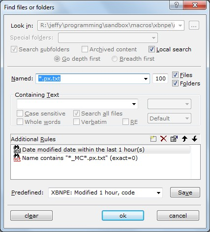

[BACK] TIP: Auto-display of most-recently changed phrase-files (Windows Explorer)[Alternative steps using the Windows Explorer replacement Xplorer2]
When actively developing phrases in an external text-editor, such as TextPad, it is useful to have the most recently changed phrase-files always present themselves, so they can be quickly imported. This is easy to do.
(See: "Desktop three" in my personal development environment)
BACK [PREV -- NEXT] Auto-display of most-recently-changed files: Step-by-step (Windows Explorer)Open a Windows Explorer window to your root PhraseExpress development directory. This directory likely contains the XBN-PhraseExpress root directory:
BACK [PREV -- NEXT] Auto-display of most-recently-changed files: Step-by-step (Windows Explorer)*.px.txt datemodified:8/28/2013
BACK [PREV -- NEXT] Auto-display of most-recently-changed files: Step-by-step (Windows Explorer)Order by date descending (most recent files at the top) .
BACK [PREV -- NEXT] Auto-display of most-recently-changed files: Step-by-step (Windows Explorer)If you wish, move the date modified column to the far left (this is my preference), and expand it so you can see the full time-stamp.
BACK [PREV -- NEXT] Auto-display of most-recently-changed files: Step-by-step (Windows Explorer)Setup is complete. Leave this window open on one side of your monitor. When importing a phrase file, open the PhraseExpress application on the other side. The most-recently-edited phrase-files can now be easily dragged from this dynamic explorer window into the PhraseExpress application.
Note that writing the folder-search-term with the file-type first makes it easy to identify the window's contents in your taskbar.
[BACK] TIP: Auto-display of most-recently changed phrase-files (Xplorer2)[go to one-time setup, using, alternative steps for Windows Explorer]
I use Xplorer2 instead of Windows Explorer. This section show you how to list the most recently changed files using Xplorer2.
The advantage of Xplorer2 is that the search terms can be very specific. The searches in this section only show phrase-files changed in the last thirty minutes--Windows Explorer can only say "today" (everything disappears at midnight). Also, pcddmenu-phrase-files are excluded from the non-pcddmenu list--in Windows Explorer, they are intermixed.
The disadvantage is that search results must be manually refreshed.
BACK [PREV -- NEXT] Auto-display of most-recently-changed files: Step-by-step (Xplorer2)These instructions are tailored to XBN-PhraseExpress developers--those wishing to alter or add to the XBN-PhraseExpress project itself. However, this is useable by anyone, simply by changing the search-directory, "Predefined" names, and the save-files as appropriate for your own PhraseExpress development directory. You will also need to create utilities for your particular save-files.
{#insert zROOT_DIR_XBNPE_MAIN}Xplorer2 > Tools > Search files...BACK [PREV -- NEXT] Auto-display of most-recently-changed files: Step-by-step (Xplorer2)Create the following search terms and save it as a "Predefined" search, with the name
XBNPE: Modified 1 hour, code
In the Xplorer2 manual (manual-version 2.1.0.1-1--download it via
Xplorer2 > Help > Contents
), these instructions are on page 130, in the section "Composing a search"
Once named, Press [OK] to activate it. Position this window in the upper left of your screen. The rest of these instructions assume that at least one file was found.

BACK [PREV -- NEXT] Auto-display of most-recently-changed files: Step-by-step (Xplorer2)To activate and refresh this search, the search terms must be saved to a file (scrap-containers are static snapshots, they do not auto-refresh). Note that "Predefined" search terms are saved internally in Xplorer2, not to a file.
In the scrap-container (which contains at least one search-result!), activate
Tools > Save search
Navigate to
{#insert zROOT_DIR_XBNPE}zz_misc_and_pxp\
and save it as
xplorer2_search__px_txt_edited_last_1hr.x2fnd
overwriting the current file (which is hard-coded to the directories on my computer).
BACK [PREV -- NEXT] Auto-display of most-recently-changed files: Step-by-step (Xplorer2)For pcddmenu files, repeat the previous steps with the following:
XBNPE: Modified 1 hour, pcddmenu"xplorer2_search__pcddmenu_px_txt_edited_last_1hr.x2fnd
BACK [PREV -- NEXT] Auto-display of most-recently-changed files: Step-by-step (Xplorer2)Once setup, and assuming you have saved your search-files to the exact directory and file-names above, the following XBN-PhraseExpress utilities will automatically open these searches for you:
zActivateMrcPcddmenuXplorer2Search (default key-command: zASpF3)zActivateMrcPxTxtXplorer2Search (default key-command: zCASpF3)For users wanting to create this utility for their own PhraseExpress development directory, simply open your save-file. For example:
{#OPEN [your-pex-dev-dir]/most_recently_changed_pex_code.x2fnd}